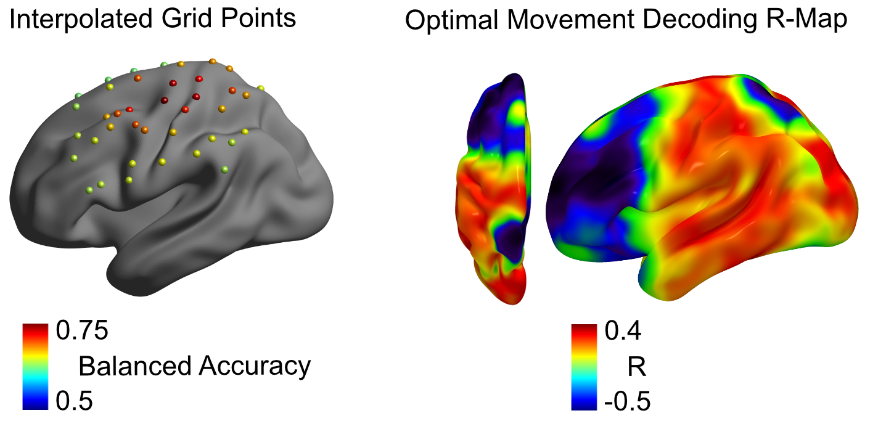

Note
Go to the end to download the full example code.
R-Map computation#
Across patient decoding using R-Map optimal connectivity#
ECoG electrode placement is commonly very heterogeneous across patients and cohorts. To still facilitate approaches that are able to perform decoding applications without patient individual training, two across-patient decoding approaches were previously investigated for movement decoding:
grid-point decoding
optimal connectivity channel decoding
First, the grid-point decoding approach relies on definition of a cortical or subcortical grid. Data from individual grid points is then interpolated onto those common grid points. The approach was also explained in the Grid Point Projection notebook.
The R-Map decoding approach relies on the other hand on computation of whole brain connectivity. The electrode MNI space locations need to be known, then the following steps can be performed for decoding without patient individual training:
Using the wjn_toolbox wjn_specrical_roi function, the MNI coordinates can be transformed into NIFTI (.nii) files, containing the electrode contact region of interest (ROI):
wjn_spherical_roi(roiname, mni, 4)
For the given ROI.nii files, the LeadDBS LeadMapper tool can be used for functional or structural connectivity estimation.
The py_neuromodulation
pymodule can then compute the R-Map given the contact-individual connectivity fingerprints:RMAP.calculate_RMap_numba(fingerprints, performances)
The fingerprints from test-set patients can then be correlated with the calculated R-Map:
RMAP.get_corr_numba(fp, fp_test)
The channel with highest correlation can then be selected for decoding without individual training.
pycontain already leave one channel and leave one patient out cross validation functions:RMAP.leave_one_sub_out_cv(l_fps_names, l_fps_dat, l_per, sub_list)
The obtained R-Map correlations can then be estimated statistically and plotted against true correlates:
RMAP.plot_performance_prediction_correlation(per_left_out, per_predict, out_path_save)
sphinx_gallery_thumbnail_path = ‘_static/RMAP_figure.png’
Total running time of the script: (0 minutes 0.000 seconds)